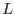
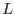

XMM-Newton Science Analysis System
eposcorr (eposcorr-3.12.2) [xmmsas_20170112_1337-16.0.0]
The statistic for optimizing the match between optical and X-ray sources is:
with the distance between an X-ray (i) and an optical source (j),
 the associated error and resp. the number of X-ray sources and optical sources in the list. In the eposcorr task only those
optical sources are considered which are within
the associated error and resp. the number of X-ray sources and optical sources in the list. In the eposcorr task only those
optical sources are considered which are within  of an X-ray source
(for a given position offset).
of an X-ray source
(for a given position offset).
In the following we will assume that the errors in the RA and DEC are equal
and uncorrelated and follow a Gaussian distribution,
we can then write
![[*]](../icons/footnote.png) .
For the expectation value of  for a given
X-ray source we get:
.
For the expectation value of  for a given
X-ray source we get:
The associated variance in is:
Of course, in practice there will be chance coincidences.
For chance coincidences the chance that an optical counter part will be within
a distance  from the source is
(i.e. within an error circle of ).
This gives for the expected value for a chance coincidence:
from the source is
(i.e. within an error circle of ).
This gives for the expected value for a chance coincidence:
And for the variance in :
The number of chance coincidences can be estimated using poison statistics
with a poison parameter of
,
with  the average number of optical sources per unit area.
The expected number of sources is thus
(where the subscript
the average number of optical sources per unit area.
The expected number of sources is thus
(where the subscript  denotes values for each X-ray source, thus allowing for fluctuations in the number of optical sources per area).
The expected value for is:
denotes values for each X-ray source, thus allowing for fluctuations in the number of optical sources per area).
The expected value for is:
How many counterparts do we need to discriminate between chance coincidences
or real counter parts? This question is not easy to answer,
as eposcorr
optimizes and also for the number of counter parts.
This means that Poissonian statistics may not be valid.
To get at least an approximate answer, we equate:
or,
The solution of this equation is .
I therefore propose to use this number plus the number of degrees of freedom
as the minimum threshold for accepting a result of eposcorr.
This means that when offsets and in RA and DEC are corrected for the minimum
number of optical counter parts should be 7, including a rotational correction
this will be 8. This number will be contained in the keyword NMATCHES.
XMM-Newton SOC/SSC -- 2017-01-12